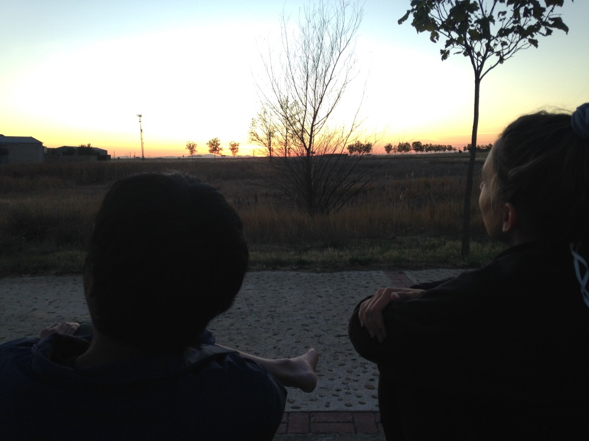

September 23, 2017 - Day 17
We are always on the cusp of collapse and redemption. Do we choose to rise, or do we settle and fall?
Stories = meaning. The mind is a meaning-making machine.
Stories have the power to change people’s lives, and we are the narrators.
Today, a group of Americans invited me to their table at dinner. They were much older than me and asked a lot of questions.
Yes, I am walking alone. No, it’s not so bad. My feet are ok, I don’t have any blisters. Yeah, I get that often (“You smile a lot!”). Well, my parents weren’t too fond of the idea, but they couldn’t have stopped me even if they had wanted to. Eh, I don’t know if it’s brave, maybe naive and reckless is more accurate. I enjoy the freedom, the simplicity, the clarity of mind. I’ve been learning a lot about myself. Yeah, my friends are supportive. And funny you should ask, I met this girl from Belgium…
“Oh my god. That is such a cute story. Are you going to visit her?”
I hadn’t thought of it. Maybe I should.
“Phil, we had such a great time with you. You are a remarkable young man. Don’t worry about dinner, it’s on us. And tell your Mom that you met a bunch of older Americans, and that they’ve adopted you. Actually––.”
Jennifer asked for my Mom’s number and sent her a picture of us.
Thanks Jennifer, Molly, Rex, Carlos, and Jackie.
September 24, 2017 - Day 18
A short day, 21 kilometers. It’s Sunday. I’ve stopped at the endearing municipal of Carrión de los Condes. Checked-in at the Santa Maria albergue. Three doors down toward the main street is the church.
Thought about what Molly said last night, about visiting M. It’s audacious, but what the hell. As if the Camino wasn’t already bold enough. Why not?
I called Transavia and asked if they could refund my flight to Amsterdam. Luckily, they did. I now have a bus ticket from Paris to Belgium.
When I returned from the grocery store, all of the pilgrims in the albergue were situated around the staircase in the living room. Four nuns were sitting in the front, one with a guitar. We took turns introducing ourselves and telling our reasons for walking the Camino.
I was riveted by the story of an elderly Korean woman. She spoke into her translator and it said:
“A few years ago, I was diagnosed with Parkinson’s Disease, but I wasn’t ready to lose my body. I chose to walk the Camino because of it. I wanted to prove everyone wrong. My family said I was crazy. But so far, I have walked for 300 kilometers, alone. I feel so alive, and I know that I am not alone because God is at my side. He continues to give me strength.”
The nuns ended the night with music. They played their guitar and sang songs in English, Spanish, and Japanese! I was enchanted. These weren’t your traditional nuns.
Wondering how Stepan is doing. Hope he’s feeling better.
September 25, 2017 - Day 19
An observation: Every day that we wake and walk, the sun begins behind us, leaving us with only our shadow. This shadow represents our fears, insecurities, and struggles, the things we hesitate to look at in the eye; in essence, our inner demons. We wake each day to confront these demons as we walk towards Santiago. But we cannot get rid of them, because then we must get rid of the sun; no sun and the shadow becomes an engulfing abyss. Rather, we must fully accept the shadow, see it as it is, and nourish it with love. It will always be there so long as we are walk towards our Santiagos, so long as we walk with life, so long as we are trying to honor the inner light within each of us. Without light, life cannot exist, and life cannot exist without shadow. But that’s ok. Because at the end of the day, we are walking towards the sun, towards Santiago, and our shadow is now behind us.
I met a French girl named Pauline while wandering around Terradillo de Templarios. She was walking to the next town, so I decided to accompany her until the edge of Terradillo. She’s been walking for over 1000 kilometers, all the way from Paris. Said she was feeling lost, but was ok with it. She wasn’t searching for anything, she simply enjoyed walking.
While waiting for the shop to open, an older South Korean woman said I looked like a kind person. That made my day. She did also. I learned she was walking alone. She said the Camino had given her peace and a more full heart.
I’ve just had the most interesting dinner with an elderly woman named Elizabeth. She’s 72 years old, walking alone, German. Her eyes glimmered with maternal gentleness.
It was her and I at a small dining table in the restaurant. I started talking to her but soon realized she did not understand a single word. She spoke back in German, and I was just as confused as she. The curve of a wry smile formed on each of our faces as we humored the situation. She continued talking to me in German, and I continued responding in English.
Then the wine came. Glass after glass, drink after drink, the wine flowed like a river. And pretty soon, we were bent over in laughter, pointing at nothings and waving our arms and legs in strange, unintelligible ways. I got drunk with an elderly 72-year-old German lady.
She showed me some pictures of her family, and I showed her mine.
“Ah, beautiful! Beautiful!”
It was a delightfully nonsensical and ridiculous time.
September 26, 2017 - Day 20
How can you see the magic if you don’ t believe in it? It’s all around, in the trees, the grass, the flowers, the birdsong. I see it in the sun, I taste it in the wind, I feel it with my smile. This moment, this is it. An ocean of possibility.
I ran into San! We haven’t seen each other since Day 1. Crazy. He looks great, and he’s found other friends – Karla, Dori, and Leo. Karla and Dori are from Croatia while Leo is from Czechia. They invited me to have dinner with them. Of course, I gladly accepted.
Afterwards, we went to watch the sunset. I was annoyed by Karla because she was constantly on her phone, talking and blabbering about essentially nothing. I decided to go to the other side of the park to watch it by myself.
I miss Marieke and her present presence.
Pauline. She’s here! In my room! She and her French friend, Morgan, are going to start walking tomorrow at 4:30am. They want to see some shooting stars and have invited me to tag along. I was initially hesitant but have agreed to go. Not sure what I’ve dragged myself into, but it should be good.
